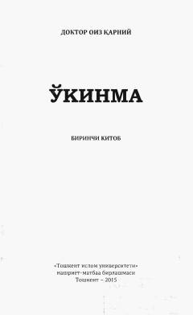

O1G'am-tashvishlardan xalos etib, qalbga xotirjamlik bag'ishlovchi ma'naviy asar.
Ushbu kitob inson hayotidagi g'am-tashvishlar, musibatlar va tushkunliklarga qarshi ma'naviy darmon topishga yordam beradi. Muallif hayotga ijobiy nazar bilan qarash, shukronalik va xotirjamlikka erishish sirlarini hayotiy misollar orqali tushuntiradi.